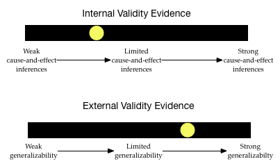

Validity Evidence and Inferences
How subjects are selected from the larger population (sampling) and how those selected subjects are then assigned to experimental conditions (design) both play a large role in the inferences that can be drawn. These two facets are directly related to questions about external validity and internal validity, respectively.
Validity is the degree to which inferences and conclusions are meaningful and accurate. It is important that you note that the validation is about the inferences, not the study. (You should never claim a study is valid.) Unfortunately, it is almost impossible to know whether the inferences we draw are valid or not. Therefore, the best we can do is to provide evidence that supports the claims of validity and present that evidence to people. In research studies there are two major types of validity evidence that should be considered:
Internal Validity Evidence: This is evidence that supports the drawing of cause-and-effect conclusions. Generally these types of conclusions are only appropriate when a study has employed random assignment. Read more at https://www.socialresearchmethods.net/kb/intval.php.
External Validity Evidence: This is evidence that supports the drawing of generalizable conclusions. Generally these types of conclusions are only appropriate when a study has employed random sampling. Read more at https://www.socialresearchmethods.net/kb/external.php.
Much like evidence used in a court of law, it is useful to think about validity evidence on a continuum. For example, after reading about the sampling and design of a particular study you might envision the following two “barometers” of the internal and external validity evidence for a study’s inferences:
The inferences drawn from this study may generalize, but are probably not causal. As you read research studies (and work on the class activities) you will learn how to situate the yellow dot along these two continuums by considering the sampling and design plans used in the study.
Studies of Peanut Allergies
Below, you will be presented with excerpts of the research design from three different studies of peanut allergies. The researchers who conducted these studies all used different study designs. After reading the excerpts of each study, try to create the two barometers to situate the internal and external validity evidence. This will help us consider the inferences and conclusions that can be appropriately drawn.
Remember there are two primary questions that you should ask when evaluating a study’s design: (1) How were the study participants selected from the population? This helps us think about the degree of external validity evidence, and (2) How were the selected study participants assigned to conditions? This helps us situate the internal validity evidence.
Study Design #1
Consider the research design of this study, published in the New England Journal of Medicine.1
Randomized Trial of Peanut Consumption in Infants at Risk for Peanut Allergy
To study whether peanut consumption was related to peanut allergies, researchers enrolled 640 infants (aged 4 to 11 months) with severe eczema, egg allergy, or both into the LEAP study. These infants were all enrolled from a single site in the United Kingdom.
Participants were stratified into two study cohorts (on the basis of the results of a skin-prick test for peanut allergy) and then participants in each study cohort were randomly assigned to a group in which dietary peanut would be consumed or a group in which its consumption would be avoided. The primary outcome was the proportion of participants with peanut allergy at 60 months of age.
Among the 530 infants in one cohort, the prevalence of peanut allergy at 60 months was 13.7% in the avoidance group and 1.9% in the consumption group. The absolute difference in risk of 11.8% represents an 86.1% relative reduction in the prevalence of peanut allergy. In the other cohort (98 infants), the prevalence of peanut allergy was 35.3% in the avoidance group and 10.6% in the consumption group.
These findings suggest that high-risk children who consumed peanut products from infancy until they were 5 years old are less likely to develop a peanut allergy than those who avoided peanuts, according to the LEAP randomized trial.
When you read about a study design, try to initially identify
- The population the researchers would like to generalize their results to.
- The sample used in the study AND how participants were sampled.
- Any control/treatment groups AND how participants were assigned to these groups.
- Response/outcome variable AND how this variable was measured.
- Results and statistical evidence
In this study, based on the excerpt,
- The population the researcher would like to generalize results to encompasses high-risk children who consume peanut products from infancy until they were 5 years old.
- The sample included 640 infants (aged 4 to 11 months at enrollment) from the United Kingdom. All 640 infants had severe eczema, egg allergy, or both. They were all enrolled at a single site. These infants were NOT randomly sampled. Although the excerpt doesn’t say, they were likely volunteered (by their parents) to be a part of the study.
- The study employed a cohort design (a replication study) in which infants in each cohort were randomly assigned to treatment (consume a peanut protein–containing bar) or control (avoid peanuts). The first cohort included 540 infants and the replication cohort included 98 infants.
- The response/outcome being measured is the prevalence of peanut allergy after 60 months of the treatment. In other words, it was the percentage of the treatment (or control) group that had a peanut allergy after 5 years.
- In the first cohort, the treatment group had a LOWER percentage of infants who developed a peanut allergy than the control group (1.9% vs. 13.7%). This finding was replicated in the replication cohort which found that only 10.6% of the treatment group had a peanut allergy after 60 months versus 35.3% of the control group. No p-values or other inferential evidence are provided.
YOUR TURN
Given this information, what would your validity evidence barometers look like?
Study Design #2
Consider the research design of this study, published in the Journal of Allergy and Clinical Immunology.2
Maternal Consumption of Peanut during Pregnancy is Associated with Peanut Sensitization in Atopic Infants
To identify factors associated with peanut sensitization, we evaluated 503 infants between 3 to 15 months of age with likely milk or egg allergy but no previous diagnosis of peanut allergy. The infants were enrolled in the study from five sites: Mount Sinai School of Medicine, New York; Duke University Medical Center, Durham, NC; Johns Hopkins University School of Medicine, Baltimore, MD; National Jewish Health, Denver, CO, and the Arkansas Children’s Hospital, Little Rock, AR.
The infants’ mothers were queried about the frequency of their peanut ingestion during each trimester of pregnancy, as well as during breastfeeding. The research found that frequent consumption of peanut during pregnancy was strongly associated with peanut sensitization/allergy (p < .001). The also did analyses in which they controlled for infants’ gender and race, two factors thought to be associated with peanut allergies. The analyses indicated that even after controlling for these factors, frequency of peanut consumption during pregnancy was strongly, positively associated with peanut sensitization/allergy (p < .001).
YOUR TURN
Based on the excerpt about this study design, try to identify
- The population the researchers would like to generalize their results to.
- The sample used in the study AND how participants were sampled.
- Any control/treatment groups AND how participants were assigned to these groups.
- Response/outcome variable AND how this variable was measured.
- Results and statistical evidence. (Hint: There are several comparisons reported.)
YOUR TURN
Given this information, what would your validity evidence barometers look like?
Study Design #3
Lastly, consider the research design of this study, published in the Journal of Allergy and Clinical Immunology.3
Prevalence of Peanut and Tree Nut Allergy in the United States Determined by Means of a Random Digit Dial Telephone Survey: A 5-Year Follow-Up Study
To study whether the prevalence of peanut allergy among the general population of the United States has changed over time, researchers contacted 9252 households by telephone in 2002 to conduct a survey about peanut allergies. (These telephone numbers constituted a random sample of phone numbers and excluded nonresidential numbers. Households were called at different times of the day and on different days to optimize contact with a resident. At least 10 attempts were made to contact a resident of each household.)
Of the households contacted, 4855 agreed to participate. These households represented a census of 13,493 individuals. The results from this survey were compared to the results from a comparable survey carried out in 1997. These comparisons indicated that the rate of peanut allergy among adults reported in 1997 (0.4%) was not statistically different from the rate reported in 2002 (0.8%). In children the researchers found a difference between the reported rates in 1997 (0.6%) and those in 2002 (1.2%; p = 0.05). The researchers concluded that the rate of peanut allergy among children has doubled from 1997 to 2002.
YOUR TURN
Based on the excerpt about this study design, try to identify
- The population the researchers would like to generalize their results to.
- The sample used in the study AND how participants were sampled.
- Any control/treatment groups AND how participants were assigned to these groups.
- Response/outcome variable AND how this variable was measured.
- Results and statistical evidence. (Hint: There are several comparisons reported.)
YOUR TURN
Given this information, what would your validity evidence barometers look like?
Du Toit, G., et al. (2015). Randomized trial of peanut consumption in infants at risk for peanut allergy. New England Journal of Medicine, 372(9), 803–813.↩︎
Sicherer, S. H., Wood, R. A., Stablein, D., Lindblad, R., Burks, A. W., Liu, A. H., Jones, S. M., Fleischer, D. M., Leung, D. Y., & Sampson, H. A. (2010). Maternal consumption of peanut during pregnancy is associated with peanut sensitization in atopic infants. Journal of Allergy and Clinical Immunology, 126(6), 1191–1197.↩︎
Sicherer, S. H., Muñoz-Furlong, A., & Sampson, H. A. (2003). Prevalence of peanut and tree nut allergy in the United States determined by means of a random digit dial telephone survey: A 5-year follow-up study. Journal of Allergy and Clinical Immunology, 112(6), 1203–1207.↩︎